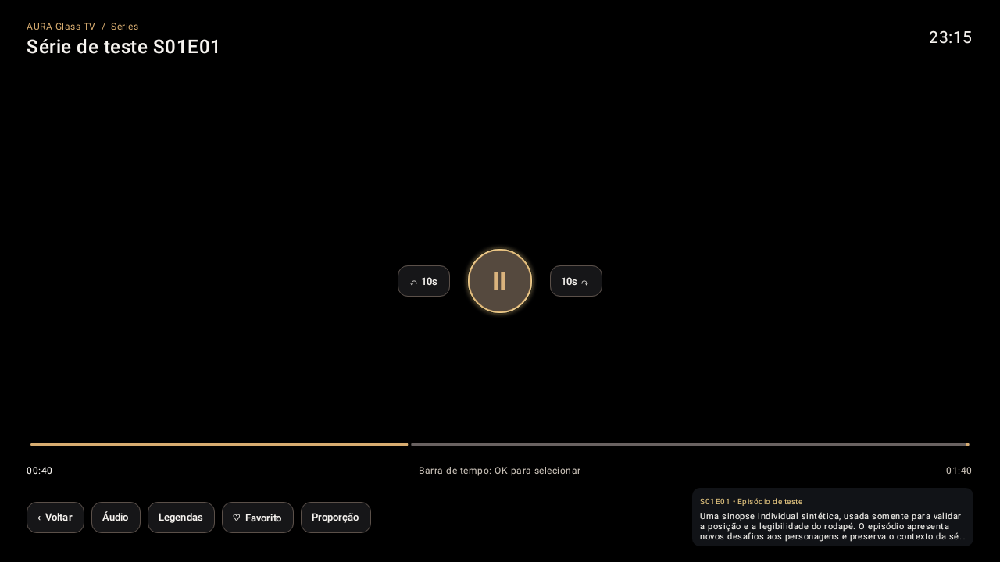
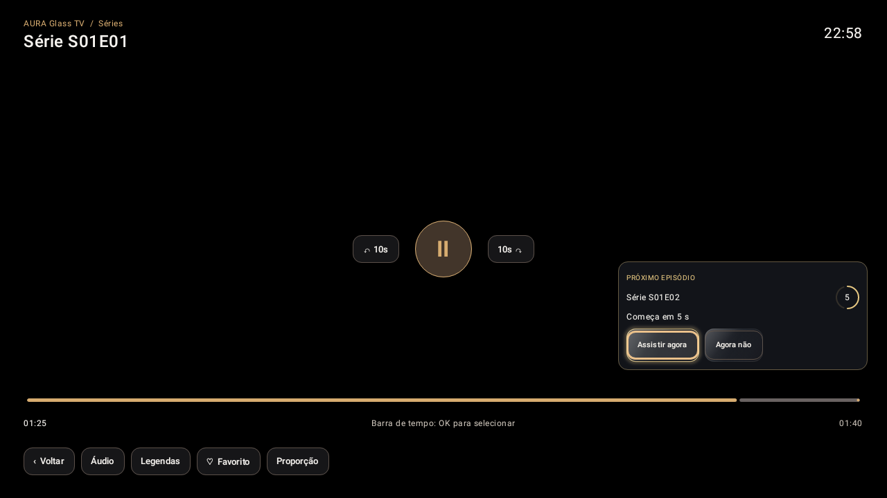

Interface Glass Premium
Grafite, detalhes dourados e destaque sutil no foco, projetados para navegar com o controle remoto.
Conheça o AURA Glass TV: um player para Android TV e Google TV que reúne suas listas compatíveis, filmes, séries e TV ao vivo em uma interface elegante, organizada e feita para o controle remoto.
Versão 0.9.9 • vc31 · Download pelo GitHub · Instalação assistida pelo Android
Uma experiência de uso consistente, da primeira navegação ao próximo episódio — sem perder o que importa: seu conteúdo e seu conforto.
Grafite, detalhes dourados e destaque sutil no foco, projetados para navegar com o controle remoto.
Explore categorias, pôsteres, sinopses, elenco e detalhes disponíveis para cada título.
Retome filmes e episódios de onde parou, com histórico e favoritos.
Visualização de canais e integração com guia de programação EPG, conforme sua fonte.
Avance automaticamente pela série, com aviso e opção de continuar o episódio até o fim.
Confira novas versões no próprio aplicativo e instale com autorização do Android.
Prévia dos controles do player e do sistema de próximo episódio, com o estilo grafite e champanhe do AURA.


Imagens de demonstração do layout, produzidas para testes de interface. Não representam canais ou filmes incluídos no aplicativo.
O download é público pelo GitHub. O APK foi desenvolvido para Android TV e Google TV (Android 9 ou superior).
Use o botão oficial desta página ou a seção Releases do GitHub. Você pode baixar no celular ou computador e enviar para a TV.
Transfira o APK pelo meio de sua preferência e abra-o no gerenciador de arquivos. Autorize a fonte externa se o Android solicitar.
Abra o AURA e adicione suas próprias listas M3U ou credenciais Xtream autorizadas. Explore o catálogo com o controle remoto.
Já utiliza o AURA? Atualize por cima da instalação anterior. Não desinstale nem limpe os dados. Para futuras versões, use Configurações → Atualizações dentro do próprio aplicativo.
Premium vc31: pesquisa aprimorada, controles de atualização estáveis, ações cinematográficas em uma linha e navegação refinada por episódios.
Versão 0.9.9-aura-premium · Android TV 9+
A instalação requer confirmação no Android. O APK é distribuído pelo repositório público oficial, com hash SHA-256 e certificado de assinatura verificados no processo de publicação.
SHA-256 da versão oferecida: d398220220c9338d33fccae82a28692e9c8f946df87627df38c4ee5e5ec00883
Estamos em beta público gratuito. Queremos saber como o AURA funciona em diferentes Android TVs e Google TVs. Encontrou algum problema ou tem uma ideia? Seu feedback ajuda a priorizar as próximas correções.
Não compartilhe contas, senhas, dados pessoais, links de playlists ou credenciais privadas nos formulários públicos. O uso gratuito é relativo à fase beta atual; condições futuras de licenciamento serão informadas antecipadamente.
Sim. O aplicativo está em beta público gratuito para testes e sugestões de melhoria. Não existe cobrança ativa nesta versão. Planejamos uma edição paga futuramente, mas não há data de lançamento ou regra comercial em vigor; as condições serão comunicadas com antecedência.
Não. O AURA é um aplicativo reprodutor e organizador de conteúdo. Você deve adicionar suas próprias fontes compatíveis e legalmente autorizadas. Não fornecemos playlists, contas, credenciais ou acesso a canais.
O APK é destinado a Android TV / Google TV com Android 9 (API 28) ou superior. O desempenho varia conforme memória, processador, rede e formato da mídia. Não é uma versão para Roku, Tizen ou webOS.
No aplicativo, acesse Configurações → Atualizações → Verificar atualizações. Quando houver nova versão, siga as instruções e confirme a instalação pelo sistema Android.
Não. Caso já utilize o mesmo AURA com assinatura original, instale a versão mais nova por cima. Desinstalar ou limpar dados pode excluir informações locais.